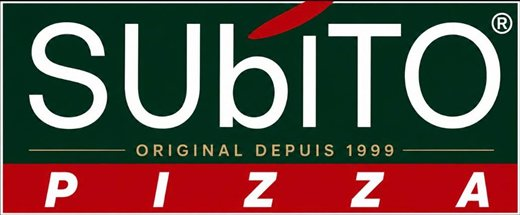

Subito Pizza — aperçu du site
Cette page sert uniquement à prévisualiser le popup en conditions réelles.
Cette page sert uniquement à prévisualiser le popup en conditions réelles.

Original depuis 1999
Hénin-Beaumont
On se rapproche de vous
Depuis 1999 à Hénin-Beaumont, vous faites partie de notre histoire. Aujourd'hui, on vous ouvre les portes de notre univers.
Rejoignez-nous sur nos réseaux !
Du contenu exclusif rien que pour toi.
Plus qu'une pizza,
une histoire de proximité.